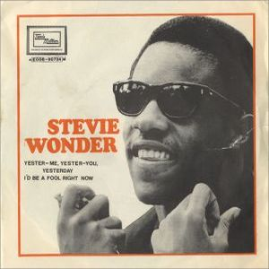
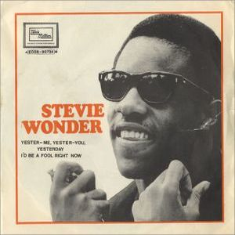

En My Cherie Amour podemos encontrar grandes canciones con las que consiguió entrar en el top ten americano con canciones como la deliciosa "My Cherie Amour" -grabada 3 años antes- o "Yester-Me, Yester-You, Yesterday", aparte de versiones muy particulares de "Light My Fire" y "Hello, Young Lovers", con un sonido muy similar al éxito conseguido con "For Once In My Life". Versiones de "The Shadows Of Your Smile" -co-escrita por Stevie- se ha versionado por grandes artistas como Eva Cassidy, Lou Rawls o Tony Bennett.
Será el final de una colaboración durante años en la producción de Henry Cosby, y el comienzo de una involucración mayor de Stevie Wonder en todos los apartados de construcción de los discos.
 
